第11章
受向心力作用物体的相互吸引运动
至此为止我论述的都是物体被吸引向不动中心的运动；虽然自然界中很可能不存在这种事情。因为吸引是针对物体的，而根据第三定律，被吸引与吸引物体的作用是相反且相等的；这使得两个物体，不论是被吸引者或是吸引者，都不是真正的静止，而两者（由运动定律推论Ⅳ）是相互吸引，绕公共重心旋转。如果有更多物体，不论是它们是受到一个物体的吸引，它们也吸引它，或是它们之间相互吸引，这些物体都将这样运动，使得它们的公共重心或是静止，或是沿直线做匀速运动。所以我现在来讨论相互吸引物体的运动，把向心力看做是吸引作用，虽然从物理学严格性上说它们也许应更准确地称为推斥作用。但这些命题只被看做是纯数学的，所以，我把物理考虑置于一边，用所熟悉的表达方式，使我所要说的更易于为数学读者理解。
命题57 定理20
两个相互吸引的物体，围绕它们的公共重心，也相互围绕对方，描出相似图形。
因为物体到它们公共重心的距离与物体成反比；因而相互间有给定比值；比值的大小与物体间的全部距离也呈固定比值。这些距离随着物体绕其公共端点以均匀角速度运动，因为位于同一条直线上，它们不会改变相互间的倾向。但相互间有给定比例的直线，也随物体绕其端点在平面上作均匀角速度运动，这平面或是相对于它们静止，或是作没有角运动的移动，而直线关于这些端点所画出的图形完全相似。所以，这些距离旋转画出的图形都是相似的。
证毕。
命题58 定理21
如果两个物体以某种力相互吸引，且绕公共重心旋转：则在相同力作用下，绕其中一个被固定物体旋转所得到的图形，相似且相等于这种相互环绕运动做出的图形。
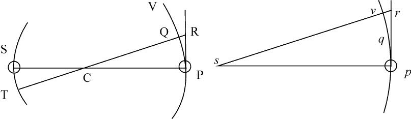
令物体S和P关于它们的公共重心C旋转，方向是由S向T以及由P向Q。由给定点s 连续作sp ，sq 等于且平行于SP，TQ；则点p 绕固定点S旋转所作曲线pqv ，将相似于且相等于物体S和P相互环绕所作的图形；因此，由定理20，也相似于相同物体关于它们的公共引力中心C旋转所得的曲线ST和PQV；而且这也可以由线段SC，CP与SP或相互间给定比例推知。
情形1．公共重心C（由运动定律推论Ⅳ）或是静止，或是匀速直线运动。首先设它静止，两物体位于s 和p ，在s 处的不动，在p 处的另一个运动，与物体S和P的情况相似。作直线PR和pr 与曲线PQ的pq 相交于p 和q ，并延长CQ和sq 到R和r 。因为图形CPRQ，sprq 相似，RQ比rq 等于CP比sp ，所以有给定比值。所以如果把物体p 吸引向物体S，因而也吸引向其间的引力中心C的力比把物体p 吸引向中心S的力取相同比值，则这些力在相同时间里通过正比于该力的间隔RQ，rq 把物体由切线PR，pr 吸引向弧PQ，pq ；所以后一种力（指向s ）使物体p 沿曲线pqv 旋转，它与第一个力推动物体P旋转所沿的曲线PQV相似；它们的环绕在相同时间内完成。但由于这些力相互比值不等于CP与sp 的比值，而是（因为物体S与s ，P与p ，以及距离SP与sp 的相等性）相等，物体在相同时间内由切线所作的曲线也相等；所以物体p 通过更大的间隔rq 被吸引，需要正比于该间隔平方根的更长的时间；因为，由引理10，运动开始时掠过的距离正比于时间的平方。然后，设物体p 的速度比物体P的速度等于距离sp 与距离CP比值的平方根，使得相互间有简单比值的弧pq ，PQ可以在正比于距离平方根的时间画出；而物体P，p 总是受到相同的力吸引，将绕固定中心C和s 画出相似图形PQV，pqv ，其中后一图形pqv 相似且相等于物体P绕运动物体S旋转所画出的图形。
证毕。
情形2．设公共重心，以及物体在其间相互运动的空间，沿直线匀速运动；则（由运动定律推论Ⅵ）在此空间中所有运动都与前一情形相同，所以物体相互间运动所画出的图形也相似且相等于图形pqv ，如前所述。
证毕。
推论Ⅰ．所以两个以正比于其距离的力相互吸引的物体，（由命题10）都绕其公共重心，以及相互绕对方，画出共心的椭圆；反之，如果画出这样的图形，则力正比于距离。
推论Ⅱ．两个物体，其力反比于距离的平方，（由命题11，12，13）都环绕其公共重心，以及相互环绕对方，画出圆锥曲线，其焦点在图形环绕的中心。反之，如果画出这样的图形，则向心力反比于距离的平方。
推论Ⅲ．绕公共重心旋转的两个物体，其伸向该中心或对方的半径所掠过的面积正比于时间。
命题59 定理22
两个物体S和P绕其公共重心C运动的周期，比其中一个物体P绕另一个保持固定的物体S，并做出相似且相等于二物体相互环绕所作图形的运动的周期，等于
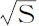
比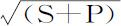
。因为，由前一命题的证明，画出任意相似弧PQ和pq 的时间的比等于
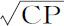
比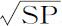
或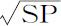
，即等于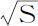
比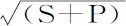
。将该比值叠加，画出整个相似弧PQ和pq 的时间的和，即画出整个图形的总时间，等于同一比值，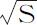
比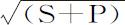
。证毕。
命题60 定理23
如果两个物体P和S，以反比于它们的距离平方的力相互吸引，绕它们的公共重心旋转：则其中一个物体，如P，绕另一个物体S旋转所画出的椭圆的主轴，与同一个物体P以相同周期环绕固定了的另一个物体S运动所画成的椭圆的主轴，二者之比等于两个物体的和S＋P比该和与另一个物体S之间的两个比例中项中前一项。
因为，如果画出椭圆是相等的，则由前一定理知，它们的周期的时间正比于物体S与物体的和S＋P的比的平方根。令后一椭圆的周期时间按相同比例减小，则周期相等；但由命题15，该椭圆的主轴将按前一比值的
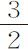
次幂减小；即，它的立方等于S比S＋P，因而它的轴比另一椭圆的轴等于S＋P与S比S＋P之间的两个比例中项中的前一个之间的比。反之，绕运动物体画出的椭圆的主轴比绕不动物体画出的椭圆主轴等于S＋P比S＋P与S之间的两个比例中项中的前一项。证毕。
命题61 定理24
如果两个物体以任意种类的力相互吸引，不受其他干扰或阻碍，以任意方式运动，则它们的运动等同于它们并不相互吸引，而都受到位于它们的公共重心的第三个物体的相同的力的吸引；而且该吸引力的规律，就物体到公共重心的距离，以及两物体之间的距离而言，是相同的。
因为使物体相互吸引的力，在指向物体的同时，也指向位于物体之间连线上的公共引力中心；所以与从其间的物体上所发出的力相同。
证毕。
又，因为其中一个物体到公共中心的距离与两物体间距离的比值已给定，当然也就可以求出一个距离的任意次幂与另一种距离的同次幂的比值；还可以求出一个距离以任意方式与给定量组合而任意导出的新量，与另一个距离以相同方式与数量相同且与该距离和第一个距离有相同比值的量所复合而成的另一个新的量的比值。所以，如果一个物体受另一个物体的吸引力正比或反比于两物体间的相互距离，或正比于该距离的任意次幂；或者，正比于该距离以任意方式与给定量所复合而成的量；则使同一个物体为公共引力中心所吸引的相同的力，也以相同方式正比或反比于被吸引物体到公共引力中心的距离，或正比于该距离的任意次幂；或者，最后，正比于以相同方式由该距离与类似的已知量的复合量。即，吸引力的规律对这两种距离而言是相同的。
证毕。
命题62 问题38
求相互间吸引力反比于距离平方的两个物体自给定处所下落的运动。
由上述定理，物体的运动方式与它们受置于公共重心的三个物体吸引相同；由命题假设该中心在运动开始时是固定的，所以，（由运动定律推论Ⅳ）它总是固定的。所以物体的运动（由问题25）可以由与它们受指向该中心的力推动的相同方式求出；由此即得到相互吸引物体的运动。
完毕。
命题63 问题39
求两个以反比于其距离的平方的力相互吸引的物体自给定处所以给定速度沿给定方向的运动。
开始时物体的运动已给定，因而可以求出公共重心的均匀运动，以及随该中心沿直线做匀速运动的空间的运动，以及最初，或开始时物体相对于该空间的运动。（由运动定律推论Ⅴ和前一定理）物体随后在该空间中的运动，其方式与该空间和公共重心保持静止，以及二物体间没有吸引力，而受位于公共重心的第三个物体的吸引相同。所以在此运动空间中，每个离开给定处所，以给定速度沿给定方向运动，且受到指向该中心的向心力作用的物体的运动，可以由问题9和26求出，同时还可以求出另一个物体绕同一中心的运动。将此运动与该空间以及在其中环绕的物体的整个系统的匀速直线运动合成，即得到物体在不动空间中的绝对运动。
完毕。
命题64 问题40
设物体相互间吸引力随其到中心距离的简单比值而增加，求各物体相互间的运动。
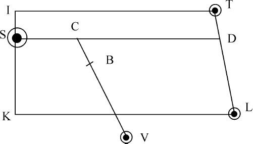
设前两个物体T和L的公共重心是D。则由定理21推论I知，它们画出以D为重心的椭圆，由问题5可以求出椭圆的大小。
设第三个物体S以加速力ST，SL吸引前两个物体T和L，它也受到它们的吸引。力ST（由运动定律推论Ⅱ）可以分解为力SD，DT；而力SL可分解为力SD和DL。力DT，DL的合力是TL，它正比于使二物体相互吸引的加速力，将该力加在物体T和L的力上，前者加于前者，后者加于后者，得到的合力仍与先前一样正比于距离DT和DL，只是比先前的力大；所以（由命题10推论Ⅰ，命题4推论Ⅰ和Ⅷ）它与先前的力一样使物体画出椭圆，但运动得更快。余下的加速力SD和DL，通过其运动力SD·T和SD·L，沿平行于DS的直线TI和LK同样吸引物体，完全不改变物体相互间的位置，只能使它们同等地趋近直线IK，该直线通过物体S的中心，且垂直于直线DS。但这种向直线IK的趋近受到阻止，物体T和L在一边，而物体S在另一边组成的系统以适当速度绕公共重心C旋转。在这种运动中，由于运动力SD·T与SD·L的和正比于距离CS，物体S倾向于重心C，并关于该中心画出椭圆；而由于CS与CD成正比，点D画出与对应的类似椭圆。受到运动SD·T和SD·L吸引力的物体T和L，如前面所说，前者对应前者，后者对应后者，同等地沿平行直线TI和LK的方向，（由运动定律推论Ⅴ和Ⅵ）绕运动点D画出各自的椭圆。
完毕。
如果再加上第四个物体V，由同样的理由可以证明，该物体与点C关于围绕公共重心B画出椭圆；而物体T，L和S绕重心D和C的运动不变，只是速度加快了。运用相同方法还可以随意加上更多的物体。
完毕。
即使物体T和L相互吸引的加速力大于或小于它们按距离比例吸引其他物体的加速力，上述情形仍成立。令所有加速吸引力相互间的比等于吸引物体距离的比，则由以前的定理容易推知，所有物体都在一个不动平面上以相同周期关于它们的公共重心B画出不同的椭圆。
完毕。
命题65 定理25
力随其到中心距离的平方而减小的物体，相互间沿椭圆运动；而由焦点引出的半径掠过的面积极近似于与时间成正比。
在前一命题中我们已证明了沿椭圆精确进行的运动情形。力的规律与该情形的规律相距越远，物体运动间的相互干扰越大；除非相互距离保持某种比例，否则按该命题所假设的规律相互吸引的物体不可能严格沿椭圆运动。不过，在下述诸情形中轨道与椭圆差别不大。
情形1．设若干小物体围绕某个很大的物体在距它不同距离上运动，且指向每个物体的力正比于其距离。因为（由运动定律推论Ⅳ）它们全体的公共重心或是静止，或是匀速运动，设小物体如此之小，以至于根本不能测出大物体到该重心的距离；因而大物体以无法感知的误差处静止或匀速运动状态中；而小物体绕大物体沿椭圆运动，其半径掠过的面积正比于时间；如果我们排除由大物体到公共重心间距所引入的误差，或由小物体相互间作用所引入的误差的话。可以使小物体如此缩小，使该间距和物体间的相互作用小于任意给定值；因而其轨道成为椭圆，对应于时间的面积没有不小于任意给定值的误差。
证毕。
情形2．设一个系统，其中若干小物体按上述情形绕一个极大物体运动，或设另一个相互环绕的二体系统，做匀速直线运动，同时受到另一个距离很远的极大物体的推动而偏向一侧。因为沿平行方向推动物体的加速不改变物体相互间的位置，只是在各部分维持其间的相互运动的同时，推动整个系统改变其位置，所以相互吸引物体之间的运动不会因该极大物体的吸引而有所改变，除非加速吸引力不均匀，或相互间沿吸引方向的平行线发生倾斜。所以，设所有指向该极大物体的加速吸引力反比于它和被吸引物体间距离的平方，通过增大极大物体的距离，直到由它到其他物体所作的直线长度之间的差，以及这些直线相互间的倾斜都可以小于任意给定值，则系统内各部分的运动将以不大于任意给定值的误差继续进行。因为，由于各部分间距离很小，整个被吸引的系统如同一个物体，它像一个物体一样因而受到吸引而运动；即，它的重心将关于该极大物体画出一条圆锥曲线（即如果该吸引较弱画出抛物线或双曲线，如果吸引较强则画出椭圆）；而且由极大物体指向该系统的半径将正比于时间掠过面积，而由前面假设知，各部分间距离所引起的误差很小，并可以任意缩小。
证毕。
由类似的方法可以推广到更复杂的情形，以至于无限。
推论Ⅰ．在情形2中，极大物体与二体或多体系统越是趋近，则该系统内各部分相互间运动的摄动越大；因为由该极大物体作向各部分的直线相互间倾斜变大；而且这些直线比例不等性也变大。
推论Ⅱ．在各种摄动中，如果设系统所有各部分指向极大物体的加速吸引力相互之间的比不等于它们到该极大物体的距离的平方的反比，则摄动最大；尤其当这种比例不等性大于各部分到极大物体距离的不等性时更是如此。因为，如果沿平行线方向同等作用的加速力并不引起系统内部分运动的摄动，而当它不能同等作用时，当然必定要在某处引起摄动，其大小随不等性的大小而变化。作用于某些物体上较大推斥力的剩余部分并不作用于其他物体，必定会使物体间的相互位置发生改变。而这种摄动迭加到由于物体间连线的不等性和倾斜而产生摄动上，将使整个摄动更大。
推论Ⅲ．如果系统中各部分沿椭圆或圆周运动，没有明显的摄动，且它们都受到指向其他物体的加速力的作用，则该力十分微弱，或在很近处沿平行方向近于同等地作用于所有部分之上。
命题66 定理26
三个物体，如果它们相互吸引的力随其距离的平方而减小；且其中任意两个倾向于第三个的加速吸引力反比于相互间距离的平方；且两个较小的物体绕最大的物体旋转：则两个环绕物体中较靠内的一个作向最靠内且最大物体的半径，环绕该物体所掠过的面积更接近于正比于时间，画出的图形更接近于椭圆，其焦点位于二个半径的交点，如果该最大物体受到这吸引力的推动，而不是像它完全不受较小物体的吸引，因而处于静止；或者像它被远为强烈的，或远为微弱的力所吸引，或在该吸引力作用下被远为强烈地，或远为微弱地推动所表现的那样的话。
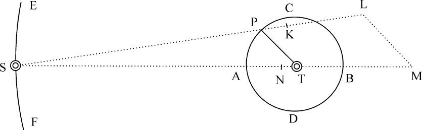
由前一命题的第二个推论不难得出这一结论，但也可以用某种更严格更一般的方法加以证明。
情形1．令小物体P和S在同一平面上关于最大物体T旋转，物体P画出内轨道PAB，S画出外轨道ESE。令SK为物体P和S的平均距离；物体P在平均距离处指向S的加速吸引力由直线SK表示。作SL比SK等于SK的平方比SP的平方，则SL是物体P在任意距离SP处指向S的加速吸引力。连接PT，作LM平行于它并与ST相交于M；将吸引力SL分解（由运动定律推论Ⅱ）为吸引力SM，LM。这样，物体P受到本三个吸引力的作用。其中之一指向T，来自物体T和P的相互吸引。该力使物体P以半径PT环绕物体T，掠过的面积正比于时间，画出的椭圆焦点位于物体T的中心；这一运动与物体T处于静止或受该吸引力而运动无关，这可以由命题11，以及定理21的推论Ⅱ和Ⅲ知道。另一个力是吸引力LM，由于它由P指向T，因而叠加在前一个力上，产生的面积，由定理21推论Ⅲ知，也正比于时间。但由于它并不反比于距离PT的平方，在迭加到前一个力上后，产生的复合力将使平方反比关系发生变化；复合力中这个力的比例相对于前一个力越大，变化也越大，其他方面则保持不变。所以，由命题11，定理21推论Ⅱ，画出以T为焦点的椭圆的力本应指向该焦点，且反比于距离PT的平方，而使该关系发生变化的复合力将使轨道PAB由以T的焦点的椭圆轨道发生变化；该力的关系变化越大，轨道的变化也同样大的变化，而且第二个力LM相对于第一个力的比例也越大，其他方面保持不变。而第三个力SM沿平行于ST的方向吸引物体P，与另两个力合成的新力不再直接由P指向T；这种方向变化的大小与第三个力相对于另两个力的比例相同，其他方面保持不变，因此，使物体P以半径TP掠过的面积不再正比于时间；相对于该正比关系发生变化的大小与第三个力相对于另两个力的比例的大小相同。然而这第三个力加剧了轨道PAB相对于前两种力造成的相对于椭圆图形的变化：首先，力不是由P指向T；其次，它不反比于距离PT的平方。当第三个力尽可能地小，而前两个力保持不变时，掠过的面积最为接近于正比于时间；而当第二和第三两个力，特别是第三个力，尽可能地小，第一个力保持先前的量不变时，轨道PAB最接近于上述椭圆。
令物体T指向S的加速吸引力以直径SN表示；如果加速吸引力SM与SN相等，则该力沿平行方向同等地吸引物体T和P，完全不会引起它们相互位置的改变，由运动定律推论Ⅵ，这两个物体之间的相互运动与该吸引力完全不存在时一样。由类似的理由，如果吸引力SN小于吸引力SM，则SM被吸引力SN抵消掉一部分，而只有（吸引力）剩余的部分MN干扰面积与时间的正比性和轨道的椭圆图形。再由类似的方法，如果吸引力SN大于吸引力SM，则轨道与正比关系的摄动也由吸引力差MN引起。在此，吸引力SN总是由于SM而减弱为MN，第一个与第二个吸引力完全保持不变。所以，当MN为零或尽可能小时，即当物体P和T的加速吸引力尽可能接近于相等时，亦即吸引力SN既不为零，也不小于吸引力SM的最小值，而是等于吸引力SM的最大值和最小值的平均值，即既不远大于也不远小于吸引力SK之时，面积与时间最接近于正比关系，而轨道PAB也最接近于上述椭圆。
证毕。
情形2．令小物体P，S关于大物体T在不同平面上旋转。在轨道PAB平面上沿直线PT方向的力LM的作用与上述相同，不会使物体P脱离该轨道平面。但另一个力NM，沿平行ST的直线方向作用（因而，当物体S不在交点连线上时，倾向于轨道PAB的平面），除引起所谓纵向摄动之外，还产生另一种所谓横向摄动，把物体P吸引出其轨道平面。在任意给定物体P和T的相互位置情形下，这种摄动正比于产生它的力MN；所以，当力MN最小时，即（如前述）当吸引力既不远大于也不远小于吸引力SK时，摄动最小。
证毕。
推论Ⅰ．所以，容易推知，如果几个小物体P，S，R等关于极大物体T旋转，则当大物体与其他物体相互间都受到吸引和推动（根据加速吸引力的比值）时，在最里面运动的物体P受到的摄动最小。
推论Ⅱ．在三个物体T，P，S的系统中，如果其中任意两个指向第三个的加速吸引力反比于距离的平方，则物体P以PT为半径关于物体T掠过面积时，在会合点A及其对点B附近时快于掠过方照点C和D。因为，每一种作用于物体P而不作用于物体T的力，都不沿直线PT方向，根据其方向与物体的运动方向相同或是相反，对它掠过面积加速或减速。这就是力NM。在物体由C向A运动时，该力指向运动方向，对物体加速；在到达D时，与运动方向相反，对物体减速；然后直到运动到B，它与运动同向；最后由B到C时它又与运动反向。
推论Ⅲ．由相同理由知，在其他条件不变时，物P在会合点及其对点比在方照点运动得快。
推论Ⅳ．在其他条件不变时，物体P在轨道在方照点比在会合点及其对点弯曲度大。因为物体运动越快，偏离直线路径越少。此外，在会合点及其对点。力KL，或NM与物体T吸引物体P的力方向相反，因而使该力减小；而物体P受物体T吸引越小，偏离直线路径越小。
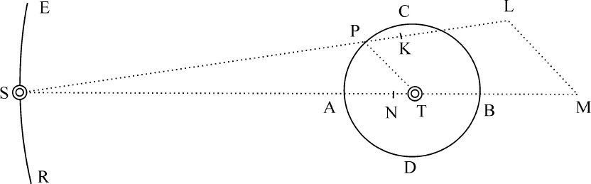
推论Ⅴ．在其他条件不变时，物体P在方照点比在会合点及其对点距物体T更远。不过这仅在不计偏心率变化时才成立。因为如果物体P的轨道是偏心的，当回归点位于朔望点时，其偏心率（如将在推论Ⅸ中计算的）最大，因而有可能出现这种情况，当物体P的朔望点接近其远回归点时，它到物体T的距离大于在方照点的距离。
推论Ⅵ．因为使物体P滞留在其轨道上的中心物体T的向心力，在方照点由于力LM的加入而增强，而在朔望点由于减去力KL而削弱，又因为力KL大于LM，因而削弱的多于增强的；而且，由于该向心力（由命题4推论Ⅱ）正比于半径TP，反比于周期的平方变化，所以不难推知力KL的作用使合力比值减小；因此设轨道半径PT不变，则周期增加，并正比于该向心力减小比值的平方根；因此，设半径增大或减小，则由命题4推论Ⅵ，周期以该半径的
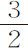
次幂增大或减小。如果该中心物体的吸引力逐渐减弱，被越来越弱地吸引的物体P将距中心物体T越来越远；反之，如果该力越来越强，它将距T越来越近。所以，如果使该力减弱的远物体S的作用由于旋转而有所增减，则半径TP也相应交替地增减；而随着远物体S的作用的增减，周期也随半径的比值的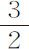
次幂，以及中心物体T的向心力的减弱或增强比值的平方根的复合比值而增减。推论Ⅶ．由前面证明的还可以推知，物体P所画椭圆的轴，或回归线的轴，随其角运动而交替前移或后移，只是前移较后移为多，因此总体直线运动是向前移的。因为，在方照点力MN消失，把物体P吸引向T的力由力LM和物体T吸引物体P的向心力复合而成。如果距离PT增加，第一个力LM近似于以距离的相同比例增加，而另一个力则以正比于距离比值的平方减少；因此两个力的和的减少小于距离PT比值的平方；因此由命题45推论Ⅰ，将使回归线，或者等价地，使上回归点后移。但在会合点及其对点使物体P倾向于物体T的力是力KL与物体T吸引物体P的力的差，而由于力KL极近似于随距离PT的比值而增加，该力差的减少大于距离PT比值的平方；因此由命题45推论Ⅰ，使回归线前移。在朔望点和方照点之间的地方，回归线的运动取决于这两种因素的共同作用，因此它按两种作用中较强的一项的剩余值比例前移或后移。所以，由于在朔望点力KL几乎是力LM在方照点的二倍，剩余在力KL一方，因而回归线向前移。如果设想两个物体T和P的系统为若干物体S，S，S，等等在各边所环绕，分布于轨道ESE上，则本结论与前一推论便易于理解了，因为由于这些物体的作用，物体T在每一边的作用都减弱，其减少大于距离比值的平方。
推论Ⅷ．但是，由于回归点的直线或逆行运动决定于向心力的减小，即决定于在物体由下回归点移向上回归点过程中，该力大于或是小于距离TP比值的平方；也决定于物体再次回到下回归点时向心力类似的增大；所以，当上回归点的力与下回归点的力的比值较之距离平方的反比值有最大差值时，该回归点运动最大。不难理解，当回归点位于朔望点时，由于相减的力KL或NM－LM的缘故，其前移较快；而在方照点时，由于相加的力LM，其后移较慢。因为前行速度或逆行速度持续时间很长，这种不等性相当明显。
推论Ⅸ．如果一个物体受到反比于它到任意中心的距离的平方的力的阻碍，环绕该中心运动；在它由上回归点落向下回归点时，该力受到一个新的力的持续增强，且超过距离减小比值的平方，则该总是被吸引向中心的物体在该新的力的持续作用下，将比它单独受随距离减小的平方而减小的力的作用更倾向于中心，因而它画出的轨道比原先的椭圆轨道更靠内，而且在下回归点更接近于中心。所以，新力持续作用下的轨道更为偏心。如果随着物体由下回归点向上回归点运动再以与上述的力的增加的相同比值减小向心力，则物体回到原先的距离上；而如果力以更大比值减小，则物体受到的吸引力比原先要小，将迁移到较大的距离，因而轨道的偏心率增大得更多。所以，如果向心力的增减比值在每一周中都增大，则偏心率也增大；反之，如果该比值减小，则偏心率也减小。
所以，在物体T，P，S的系统中，当轨道PAB的回归点位于方照点时，上述增减比值最小，而朔望点时最大。如果回归点位于方照点，该比值在回归点附近小于距离比值的平方，而在朔望点大于距离比值的平方；而由该较大比值即产生的回归线运动，正如前面所述。但如果考虑上下回归点之间的整个增减比值，它还是小于距离比值的平方。下回归点的力比上回归点的力小于上回归点到椭圆焦点的距离与下回归点到同一焦点的距离的比值的平方，反之，当回归点位于朔望点时，下回归点的力比上回归点的力大于上述距离比值的平方。因为在方照点，力LM叠加在物体T的力上，复合力比值较小；而在朔望点，力KL减弱物体T的力，复合力比值较大。所以，在回归点之间运动的整个增减比值，在方照点最小，在朔望点最大；所以，回归点在由方照点向朔望点运动时，该比值持续增大，椭圆的偏心率也增大；而在由朔望点向方照点运动时，比值持续减小，偏心率也减小。
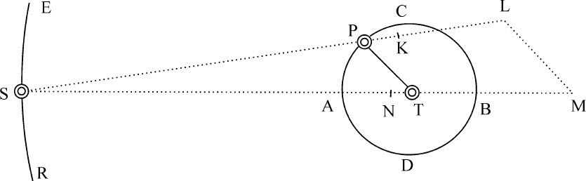
推论Ⅹ．我们可以求出纬度误差。设轨道EST的平面不动，由上述误差的原因可知，两个力NM，ML是误差的唯一和全部原因，其中力ML总是在轨道PAB平面内作用，不会干扰纬度方向的运动；而力NM，当交会点位于朔望点时，也作用于轨道的同一平面，此时也不会影响纬度运动。但当交会点位于方照点时，它对纬度运动有强烈干扰，把物体持续吸引出其轨道平面；在物体由方照点向朔望点运动时，它减小轨道平面的倾斜，而当物体由朔望点移向方照点时，它又增加平面的倾斜。所以，当物体到达朔望点时，轨道平面倾斜最小，而当物体到达下一个交会点时，它又恢复到接近于原先的值。但如果物体位于方照点后的八分点（45°）即位于C和A，D和B之间，则由于刚才说明的原因，物体P由任一交会点向其后90°点移动时，平面倾斜逐渐减小；然后，在由下一个45°向下一个方照点移动时，倾斜又逐渐增加；其后，再由下一个45°度向交会点移动时，倾斜又减小。所以，倾斜的减小多于增加，因而在后一个交会点总是小于前一个交会点。由类似理由，当交会点位于A和D，B和C之间的另一个八分点时，平面倾斜的增加多于减小。所以，当交会点在朔望点时倾斜最大。在交会点由朔望点向方照点运动时，物体每次接近交会点，倾斜都减小，当交会点位于方照点同时物体位于朔望点时倾斜达到最小值；然后它又以先前减小的程度增加，当交会点到达下一个朔望点时恢复到原先值。
推论Ⅺ．因为，当交会点在方照点时，物体P被逐渐吸引离开其轨道平面，又因为该吸引力在它由交会点C通过会合点A向交会点D运动时是指向S的，而在它由交会点D通过对应点B移向交会点C时，方向又相反，所以，在离开交会点C的运动中，物体逐渐离开其原先的轨道平面CD，直至它到达下一个交会点，因而在该交会点上，由于它到原先平面CD距离最远，它将不在该平面的另一个交会点D，而在距物体S较近的一个点通过轨道EST的平面，该点即该交会点在其原先处所后的新处所。而由类似理由，物体由一个交会点向下一个交会点运动时，交会点也向后退移。所以，位于方照点的交会点逐渐退移；而在朔望点没有干扰纬度运动的因素，交会点不动；在这两种处所之间两种因素兼而有之，交会点退移较慢。所以，交会点或是逆行，或是不动，总是后移，或者说，在每次环绕中都向后退移。
推论Ⅻ．在物体P，S的会合点，由于产生摄动的力NM，ML较大，上述诸推论中描述的误差总是略大于对点的误差。
推论Ⅷ．由于上述诸推论中误差和变化的原因和比例与物体S的大小无关，所以即使物体S大到使二物体P和T的系统环绕它运动上述情形也会发生。物体S的增大使其向心力增大，导致物体P的运动误差增大，也使在相同距离上所有误差都增大，在这种情形下，误差要大于物体S环绕物体P和T的系统运动的情形。
推论ⅩⅣ．但是，当物体S极为遥远时，力NM，ML极其接近于正比于力SK以及PT与ST的比值；即，如果距离PT与物体S的绝对力二者都给定，反比于ST3 ；由于力NM，ML是前述各推论中所有误差和作用的原因；则如果物体T和P仍与先前相同，只改变距离ST和物体S的绝对力，所有这些作用都将极为接近于正比于物体S的绝对力，反比于距离ST的立方。所以，如果物体P和T的系统绕远物体S运动，则力NM，ML以及它们的作用，将（由命题4推论Ⅱ）反对于周期的平方。所以，如果物体S的大小正比于其绝对力，则力NM，ML及其作用，将正比于由T看远物体S的视在直径的立方；反之亦然。因为这些比值与上述复合比值相同。
推论ⅩⅤ．如果轨道ESE，PAB保持其形状比例及相互间夹角不变，而只改变其大小，且物体S和T的力或者保持不变，或者以任意给定比例变化，则这些力（即，物体T的力，它迫使物体P由直线运动进入轨道PAB，以及物体S的力，它使物体P偏离同一轨道）总是以相同方式和相同比例起作用。因而，所有的作用都是相似而且是成比例的。这些作用的时间也是成比例的；即，所有的直线误差都比例于轨道直径，角误差保持不变；而相似直线误差的时间，或相等的角误差的时间，正比于轨道周期。
推论ⅩⅥ．如果轨道图形和相互间夹角给定，而其大小、力以及物体的距离以任意方式变化，则我们可以由一种情形下的误差以及误差的时间非常近似地求出其他任意情形下的误差和误差时间。这可以由以下方法更简捷地求出。力NM，ML正比于半径TP，其他条件均不变；这些力的周期作用（由引理10推论Ⅱ）正比于力以及物体P的周期的平方。这正是物体P的直线误差；而它们到中心T的角误差（即回归点与交会点的运动，以及所有视在经度和纬度误差）在每次环绕中都极近似于正比于环绕时间的平方。令这些比值与推论ⅩⅣ中的比值相乘，则在物体T，P，S，的任意系统中，P在非常接近处环绕T运动，而T在很远处环绕S运动，由中心T观察到的物体P的角误差在P的每次环绕中都正比于物体P的周期的平方，而反比于物体T的周期的平方。所以回归点的平均直线运动与交会点的平均运动有给定比值；因而这两种运动都正比于物体P的周期，反比于物体T的周期的平方。轨道PAB的偏心率和倾角的增大或减小对回归点和交会点的运动没有明显影响，除非这种增大或减小确乎为数极大。
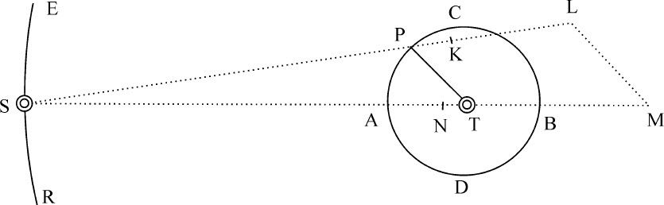
推论ⅩⅦ．由于直线LM有时大于，有时又小于半径PT，令LM的平均量由半径PT来表示：则该平均力比平均力SK或SN（它也可以由ST来表示）等于长度PT比长度ST。但使物体T维持其环绕S的轨道上的平均力SN或ST与使物体P维持在其环绕T的力的比值，等于半径ST与半径PT的比值，与物体P环绕T的周期的平方与物体T环绕S的周期的平方的比值的复合。因而，平均力LM比使物体P维持在其环绕T的轨道上的力（或使同一物体P在距离PT处关于不动点T作相同周期运动的力）等于周期的平方比值。因而周期给定，同时距离PT、平均力LM也给定；而这个力给定，则由直线PT和MN的对比也可非常近似地得出力MN。
推论ⅩⅧ．利用物体P环绕物体T的相同规律，设许多流动物体在相同距离处环绕物体T运动；它们数目如此之多，以至于首尾相接，形成圆形流体圈，或圆环，其中心在物体T；这个环的各个部分在与物体P相同的规律作用下，在距物体T更近处运动，并在它们自己以及物体S的会合点及其对点运动较快，而在方照点运动较慢。该环的交会点或它与物体S或T的轨道平面的交点在朔望点静止；但在朔望点以外，它们将退行，或逆行方向运动，在方照点时速度最大，而在其他处所较慢。该环的倾角也变化，每次环绕中它的轴都摆动，环绕结束时轴又回到原先的位置，唯有交会点的岁差使它作少许转动。
推论ⅩⅨ．设球体T包含若干非流体物体，被逐渐扩张其边缘延伸到上述环处，沿球体边缘开挖一条注满水的沟道；该球绕其自身的轴以相同周期匀速转动。则水被交替地加速或减速（如前一推论那样），在朔望点速度较快，方照点较慢，在沟道中像大海一样形成退潮和涨潮。如果撤去物体S的吸引，则水流没有潮涌和潮落，只沿球的静止中心环流。球做匀速直线运动，同时绕其中心转动时与此情形相同（由运动定律推论V），而球受直线力均匀吸引时也与此情形相同（由运动定律推论Ⅵ）。但当物体S对它有作用时，由于吸引力的变化，水获得新的运动；距该物体较近的水受到的吸引较强，而较远的吸引较弱。力LM在方照点把水向下吸引，并一直持续到朔望点：而力KL在朔望点向上吸引水，并一直持续到方照点；在此，水的涌落运动受到沟道方向的导引，以及些微的摩擦除外。
推论ⅩⅩ．设圆环变硬，球体缩小，则水的涌落运动停止；但环面的倾斜运动和交会点岁差不变。令球与环共轴，且旋转时间相同，球面接触环的内侧并连为整体；则球参与环的运动，而整体的摆动，交会点的退移一如我们所述，与所有作用的影响完全相同。当交会点在朔望点时，环面倾角最大。在交会点向方照点移动时，其影响使倾角逐渐减小，并在整个球运动中引入一项运动。球使该运动得以维持，直至环引入相反的作用抵消这一运动，并入相反方向的新的运动。这样，当交会点位于方照点时，使倾角减小的运动达到最大值，在该方照点后八分点处倾角有最小值；当交会点位于朔望点时，倾斜运动有最大值，在其后的八分点处斜角最大。对于没有环的球，如果它的赤道地区比极地地区略高或略密一些，则情形与此相同，因为赤道附近多出的物体取代了环的地位。虽然我们可以设球的向心力任意增大，使其所有部分像地球上各部分一样竖直向下指向中心，但这一现象与前述各推论却少有改变；只是水位最高和最低处有所不同；因为这时水不再靠向心力维系在其轨道内，而是靠它所沿着流动的沟道维系。此外，力LM在方照点吸引水向下最强，而力KL或NM－LM在朔望点吸引水向上最强。这些力的共同作用使水在朔望点之前的八分点不再受到向下的吸引，而转为受到向上吸引；而在该朔望点之后的八分点不再受到向上的吸引，而转为向下的吸引。因此，水的最大高度大约发生在朔望点后的八分点，其最低高度大约发生在方照点之后的八分点；只是这些力对水面上升或下降的影响可能由于水的惯性，或沟道的阻碍而有些微推延。
推论Ⅻ．由同样的理由，球上赤道地区的过剩物质使交会点退移，因此这种物质的增多会使逆行运动增大，而减少则使逆行运动减慢，除去这种物质则逆行停止。因此，如果除去较过剩者更多的物质，即如果球的赤道地区比极地地区凹陷，或物质稀薄，则交会点将前移。
推论ⅩⅫ．所以，由交会点的运动可以求出球的结构。即，如果球的极地不变，其（交会点的）运动逆行，则其赤道附近物体较多；如果该运动是前行的，则物质较少。设一均匀而精确的球体最初在自由空间中静止；由于某种侧面施加于其表面的推斥力使其获得部分转动和部分直线运动。由于该球相对于其通过中心的所有轴是完全相同的，对一个方向的轴比对另一任意轴没有更大的偏向性，则球自身的力决不会改变球的转轴，或改变转轴的倾角。现在设该球如上述那样在其表面相同部分又受到一个新的推斥力的斜向作用，由于推斥力的作用不因其到来的先后而有所改变，则这两次先后到来的推斥力冲击所产生的运动与它们同时到达效果相同，即与球受到由这二者复合而成的单个力的作用而产生的运动相同（由运动定律推论Ⅱ），即产生一个关于给定倾角的轴的转动。如果第二次推斥力作用于第一次运动的赤道上任意其他处所，情形与此相同，而第一次推斥力作用在由第二次作用所产生的运动的赤道上的任意一点上的情形也与此完全相同；所以二次推斥力作用于任意处的效果均相同，因为它们产生的旋转运动与它们同时共同作用于由这两次冲击分别单独作用所产生的运动的赤道的交点上所产生的运动相同。所以，均匀而完美的球体并不存留几种不同的运动，而是将所有这些运动加以复合，化简为单一的运动，并总是尽其可能地绕一根给定的轴作单向匀速转动，轴的倾角总是维持不变。向心力不会改变轴的倾角，或转动的速度。因为如果设球被通过其中心的任意平面分为两个半球，向心力指向该中心，则该力总是同等地作用于这两个半球，所以不会使球关于其自身的轴的转动有任何倾向。但如果在该球的赤道和极地之间某处添加一堆像山峰一样的物质，则该堆物质通过其脱离运动中心的持续作用，干扰球体的运动，并使其极点在球面上游荡，关于其自身以及其对点运动画出圆形，极点的这种巨大偏移运动无法纠正，除非把此山移到二极之一，在此情形中，由推论ⅩⅪ，赤道的交会点顺行；或移至赤道地区，这种情形中，由推论ⅩⅩ，交会点逆行；或者，最后一种方法，在轴的另一边加上另一座新的物质山堆，使其运动得到平衡；这样，交会点或是顺行，或是逆行，这要由山与新增的物质是近于极地或是近于赤道来决定。
命题67 定理27
在相同的吸引力规律下，较外的物体S，以它伸向较内的物体P与T的公共重心点O的半径环绕该重心运动，比它以伸向最里面最重的物体T的半径环绕该物体T的运动，所掠过的面积更近于正比于时间，画出的轨道更近于以该重心为焦点的椭圆。
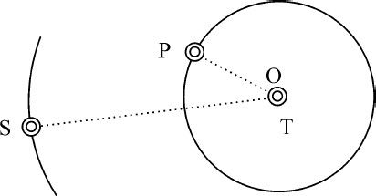
因为物体S指向T和P的吸引力复合成其绝对吸引力，它更近于指向物体T和P的公共重心O，而不是最大的物体T；它更近于反比于距离SO的平方，而不是距离ST的平方；这稍作考虑即可明白。
证毕。
命题68 定理28
在相同的吸引力规律下，如果最里面最大的物体像其他物体一样也受到该吸引力的推动，而不是处于静止，完全不受吸引力作用，或者，不是被或是极强或是极弱地吸引而极强或是极弱地被推动，则最外面的物体S，以其伸向较内的物体P和T的公共重心的半径，关于该重心所掠过的面积更近于正比于时间，其轨道也更近于以该重心为焦点的椭圆。
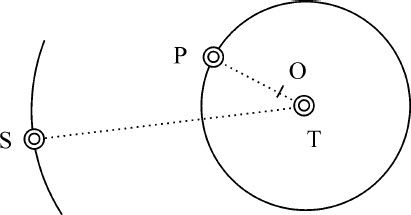
该定理可以用与命题66相同的方法证明，但由于它冗长繁琐，我在此略过。可以用如下简便方法来考虑。由前一命题的证明易知，物体S受到两个力的共同作用而倾向的中心，非常接近于另两个物体的公共重心，如果该中心与该公共重心重合，而且这三个物体的公共重心是静止的，物体S位于其一侧，而那两个物体的公共重心位于其另一侧，都将关于该静止公共重心画出真正的椭圆。这可以由命题58推论Ⅱ，比较命题64和65的证明推知。现在这一精确的椭圆运动受到二个物体的重心到使第三个物体S被吸引的中心的距离的微小干扰，而且，还要加上三个物体公共重心的运动，摄动增加更多。所以，当三个物体的公共重心静止时，即当最里面、最大的物体T受到与其他物体一样的吸引力作用时，摄动最小；而当三物体的公共重心，由于物体T的运动的减小而开始运动，并越来越剧烈时，摄动最大。
推论．如果若干小物体绕大物体旋转，容易推知，如果所有物体都受到正比于其绝对力，反比于距离平方的加速力的相互吸引和推动，如果每个轨道的焦点都位于所有较靠里面物体的公共重心上（即，如果第一个和最靠里面的轨道的焦点位于最大和最里面物体的重心上；第二个轨道的焦点位于最里面二个物体的公共重心上；第三个轨道的焦点位于最里面的三个物体的公共重心上，以此类推），而不是最里面的物体处于静止，而且是所有轨道的公共焦点，则轨道接近于椭圆，面积的生成也比较均匀。
命题69 定理29
在若干物体A，B，C，D，等等的系统中，如果其中一个，如A，吸引所有其他物体B，C，D，等等，加速力反比于到吸引物体距离的平方；而另一个物体，如B，也吸引所有其他物体A，C，D，等等，加速力也反比于到吸引物体的距离的平方；则吸引物体A和B的绝对力相互间的比就等于这些力所属的物体A和B的比。
因为，由假设知，所有物体B，C，D，指向物体A的加速吸引力在距离相同时相等；由类似方法知所有物体指向B的加速吸引力在距离相同处也相等。而物体A的绝对吸引力比物体B的绝对吸引力，等于所有物体指向物体A的绝对吸引力比在相同距离处所有物体指向物体B的绝对吸引力；物体B指向物体A的吸引力比物体A指向物体B的加速吸引力也与此相等。但是，物体B指向物体A的加速吸引力比物体A指向物体B的加速吸引力等于物体A的质量比物体B的质量；因为运动力（由第二，第七和第八定义）正比于加速力乘以被吸引的物体，且由第三定律相互间是相等的。所以物体A的绝对加速力比物体B的绝对加速力等于物体A的质量比物体B的质量。
证毕。
推论Ⅰ．如果系统A，B，C，D中的每一个物体都独自以反比于它到吸引物体的距离的平方的加速力吸引其他物体，则所有这些物体的绝对力之间的比等于它们自身的比。
推论Ⅱ．由类似理由，如果系统A，B，C，D中的每一个物体都独自吸引其他物体，其加速力或是反比或是正比于它到吸引物体的任意次幂；或者，该力按某种共同规律由它到吸引物体间的距离来决定；则易知这些物体的绝对力正比于物体自身。
推论Ⅲ．在一系统中力正比于距离的平方而减少，如果小物体沿椭圆绕一个极大物体运动，它们的公共焦点位于极大物体的中心，椭圆形状极为精确；而且，伸向该极大物体的半径精确地正比于时间掠过半径；则这些物体的绝对力相互间的比，或是精确地或是接近于等于物体的比，反之亦然。这可以由命题68的推论与本命题的第一个推论比较得证。
附注
由这些命题自然使我们推知向心力与这种力通常所指向的中心物体之间类似之处；因为有理由认为被指向物体的向心力应当由这些物体的性质和量来决定，如我们在磁体实验中所见到的那样。当发生这种情形时，我们必须通过赋予它们中每一个以适当的力来计算物体的吸引，再求出它们的总和。我在此使用吸引一词是广义的，指物体所造成的相互趋近的一切企图，不论这企图来自物体自身的作用，由于发射精气而相互靠近或推移；或来自以太，或空气，或任意媒介的相互作用，不论这媒介是物质的还是非物质的，以任意方式促使处于其中的物体相互靠拢。我使用推斥一词同样是广义的。在本书中我并不想定义这些力的类别或物理属性，而只想研究这些力的量与数学关系，一如我们以前在定义中所声明的那样。在数学中，我们研究力的量以及它们在任意设定条件下的相互关系，而在物理学中，则要把这些关系与自然现象作比较，以便了解这些力在哪些条件下对应着吸引物体的哪些类型。做完这些准备工作之后，我们就更有把握去讨论力的本质、原因和关系。现在，让我们再来研究用哪些力可以使由具有吸引能力的部分组成的球体必定按上述方式相互作用，以及因此会产生哪些类型的运动。